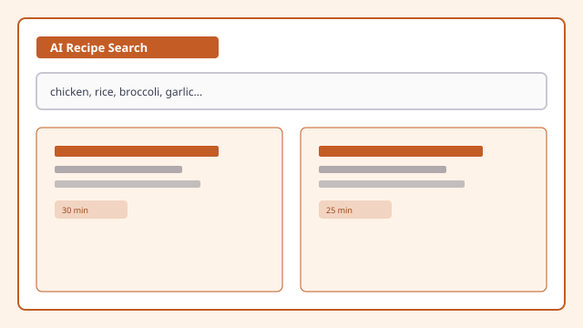

AI Recipe Search

Overview
Recipe Finder is an accessible web application that helps users discover wholesome recipes for everyday life. Search by recipe name, ingredient, or category, then browse detailed instructions, ingredients, and prep times for each dish.
The live demo tagline: “Find your next favorite meal — search 12 categories and 26 wholesome recipes inspired by fresh, minimal food blogs.”
Try the Live Demo
Explore the working application on Netlify. The home page offers keyword search and quick category shortcuts. The all-recipes view adds filter chips for every category, and each recipe opens a detail page with ingredients, step-by-step instructions, and favorites.
Problem
Users often struggle to determine what meals they can prepare using ingredients already available, or to find recipes that match dietary preferences without wading through cluttered recipe sites.
Solution
I designed Recipe Finder as a focused search experience where users can filter by keyword or category, review clear recipe cards, and save favorites for later — all in an interface built for accessible navigation across devices.
Key Features
- Keyword search across recipe titles, descriptions, categories, and ingredients
- 12 browse categories including Pasta, Chicken, Vegetarian, Vegan, Desserts, Bowls, Soup, and Quick & Easy
- Category filter chips with pressed-state feedback on the search results page
- Recipe detail pages with prep time, cook time, servings, ingredients, and numbered instructions
- Favorites saved in local storage with a dedicated favorites view
- URL-based search and category routing (for example,
/search?category=Vegetarian) - Semantic landmarks, labeled search controls, and keyboard-accessible navigation
Recipe Categories in the Demo
The live app organizes 26 recipes across categories such as:
-
Vegetarian & Vegan
17 vegetarian recipes including Buddha bowls, lentil soup, and zucchini noodle pad thai.
-
Pasta & Quick Meals
Classic carbonara, lemon ricotta pasta, and weeknight-friendly options.
-
Salads, Bowls & Breakfast
Grilled chicken salad, nourish bowls, avocado toast, and banana oat pancakes.
-
Desserts & Snacks
Sweet and snackable recipes alongside savory mains for flexible meal planning.
Accessibility Approach
Recipe Finder was built with an accessible, user-friendly interface designed for clear navigation and inclusive use across devices. Search fields, category filters, and recipe regions use descriptive labels, and recipe detail pages separate ingredients and instructions into distinct landmark regions.
Technologies Used
- HTML
- CSS
- JavaScript
- localStorage
What I Learned
- Search interface design for ingredient and category discovery
- Client-side filtering across structured recipe metadata
- Persistent favorites without a backend
- Accessible recipe detail layouts with clear reading order
Future Enhancements
- Meal planning and shopping list generation
- Nutritional information for recipes
- Save and share favorite recipes across devices
- Voice input for hands-free ingredient entry